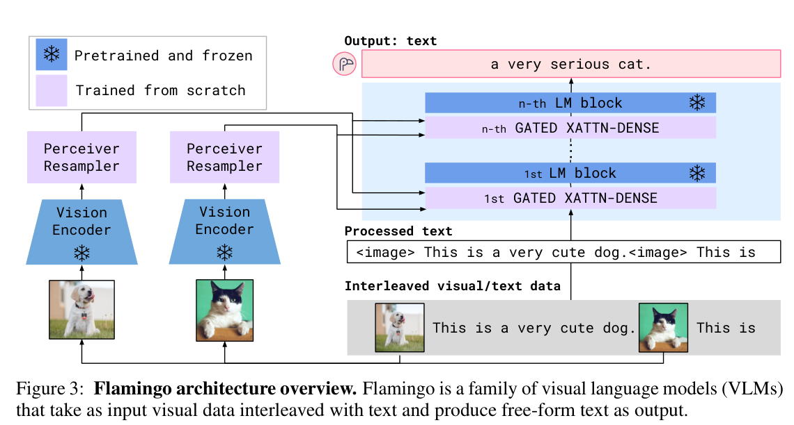
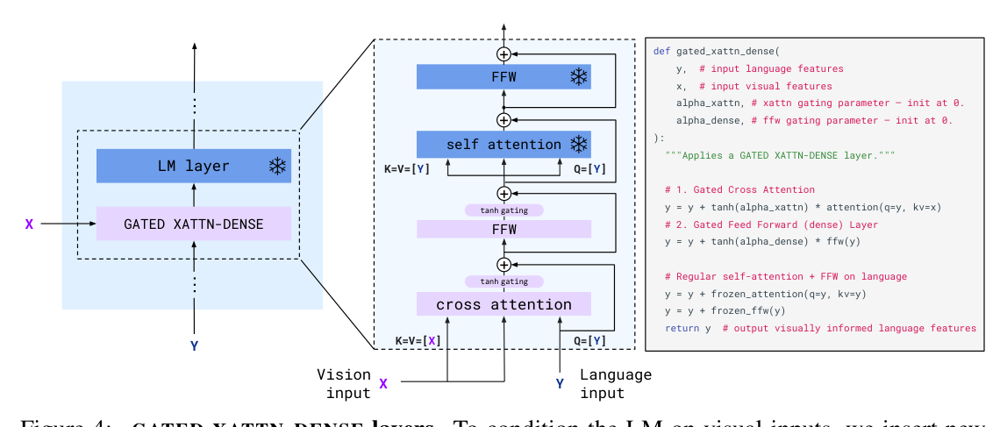
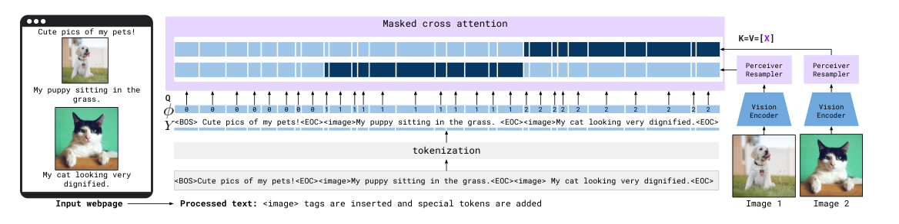

Flamingo¶
📄 论文链接：arXiv:2204.14198 | PDF
核心要点¶
- 冻结 LLM + 视觉桥接：冻结 Chinchilla，仅训练 Perceiver Resampler + GATED XATTN-DENSE。
- 交错图文生成：原生支持任意交错的图像/视频与文本序列输入。
- Perceiver Resampler：将可变视觉 token 压缩为固定 64 个。
- GATED XATTN-DENSE：tanh 门控零初始化，稳定地向冻结 LM 注入视觉信息。
- Few-Shot 能力：通过交错图文预训练获得上下文学习能力。
1. 背景¶
Flamingo 的核心洞察：与其从头训练一个多模态模型，不如将一个已经强大的纯文本 LLM "升级"为多模态模型。

Figure 3: Flamingo 架构概览。接收交错视觉/文本输入，输出自由文本。2. 方法¶
2.1 Perceiver Resampler¶
将视觉编码器（NFNet）输出的可变数量视觉特征压缩为固定 64 个 token。
- 结构：64 个可学习 latent queries + 6 层 Transformer
- 输入：图像/视频经 NFNet 提取的特征（图像视为单帧视频）
- 输出：64 个视觉 token
- 关键细节：
- 只用时间位置编码（CNN 已隐式编码空间信息）
- K/V 拼接策略：latent queries 也拼入 K/V，实现彼此交互
 Figure 5: Perceiver Resampler 将可变视觉特征映射为固定数量输出 token。
Figure 5: Perceiver Resampler 将可变视觉特征映射为固定数量输出 token。
2.2 GATED XATTN-DENSE¶
在冻结 LM 层之间插入可训练的 cross-attention + FFN，通过 tanh 门控注入视觉信息：
\[y = y + \tanh(\alpha_{xattn}) \cdot \text{CrossAttn}(y, Z')$$
$$y = y + \tanh(\alpha_{dense}) \cdot \text{FFN}(y)\]
- \(\alpha_{xattn}\)、\(\alpha_{dense}\) 初始化为 0，训练初期等价于原始冻结 LM
- 消融：移除零初始化门控，整体性能下降 4.2%，且训练不稳定
- 插入策略：
- 每层插入：最佳性能
- 每 4 层插入：训练加速 66%，性能下降 1.9%
- 每 7 层插入：Flamingo-80B 因硬件限制采用

Figure 4: GATED XATTN-DENSE 层结构。keys/values 来自 Perceiver Resampler 输出的视觉 token，门控参数初始化为零。2.3 交错图文与 Masking¶
- 特殊 token：
<BOS>、<EOC>、<image> - 因果性：每个文本 token 只能 attend 到之前的文本和视觉 token
- 选择性 cross-attention：每个文本 token 只 attend 最近的前置图像/视频
- Few-shot：将 \(k\) 个示例与查询样本拼接成交错序列，模型自回归生成答案

Figure 7: 交错图文输入的 masking 机制。3. 网络结构与训练¶
3.1 整体架构¶
| 组件 | 是否冻结 | 参数量（Flamingo-80B） | 作用 |
|---|---|---|---|
| Vision Encoder (NFNet-F6) | ✅ | ~435M | 提取视觉特征 |
| Perceiver Resampler | ❌ | ~0.2B | 压缩视觉 token |
| LM (Chinchilla 70B) | ✅ | 70B | 语言理解与生成 |
| GATED XATTN-DENSE | ❌ | ~10B | 注入视觉信息 |
总参数约 80B，可训练参数约 10B 量级（主要来自 GATED XATTN-DENSE）。
3.2 训练配置¶
- 数据：ALIGN（1.8B 图文对）、LTIP（312M）、VTP（27M 视频-文本对）、M3W（43M 网页）
- 目标：多数据集加权的 next-token prediction
- 优化器：AdamW，lr=1e-4，warmup 5000 步
- 规模：Flamingo-80B 用 1536 个 TPUv4 训练 15 天
3.3 对比¶
| 特性 | Flamingo | CLIP | BLIP-1 | BLIP-2 | LLaVA |
|---|---|---|---|---|---|
| LM | 冻结 | N/A | BERT，端到端 | 冻结 | 全量微调 |
| 视觉编码器 | NFNet（冻结） | ViT（联合训练） | ViT（可训练） | EVA-CLIP / CLIP ViT（冻结） | CLIP ViT（冻结） |
| 桥接 | Perceiver + Gated XAttn | 对比投影 | 共享 Transformer | Q-Former | MLP |
| 交错图文 | ✅ | ❌ | ❌ | ❌ | ❌ |
| In-context | 强 | ❌ | 弱 | 弱 | 弱 |
- vs CLIP：CLIP 对齐表示空间，Flamingo 专注自由文本生成。
- vs BLIP-2：都冻结 LLM，但 BLIP-2 的 Q-Former 需先经 ITC/ITM/ITG 做 stage-1 预训练；Flamingo 直接端到端训练。
- vs LLaVA：LLaVA 全量微调 LLM，Flamingo 冻结 LLM 以保留预训练能力。
4. 总结¶
Flamingo 提出了一种最小侵入式的多模态升级方案：冻结 LLM 和视觉编码器，仅训练轻量桥接模块，使纯文本 LLM 获得交错图文理解与 few-shot 生成能力。
关键贡献： - Perceiver Resampler：解决可变视觉 token 数量问题 - tanh 门控零初始化：保证训练稳定 - 交错图文 masking：支持复杂多模态输入